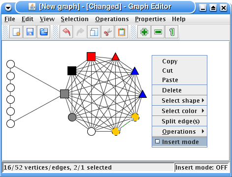

When the program starts it displays an empty graph in the graph window. The graph window is the component in the program window that is located in the center of the screen. The computer mouse is used to edit the graph.
There are two editing modes, one is called insert mode on and another is insert mode off. The current is indicated in the right corner of the status bar at the bottom of the window. The insert mode on is typically used to insert vertices and edges into the graph. The insert mode off is typically used to move vertices.
The easiest to switch editing mode is to use the space key on the keyboard. You can also click on the edit menu and select insert modeH or right click in the editing window to get a menu where it is possible to change editing mode. Holding down the A-key wil temporaily change and it will only stay as long as you hold down the key. The A-key is intended for situation when you only want to do something fast in the other editing mode and after that go back to the original
nMany of the commands that can be performed on the graph are dependent on which part of the graph is selected. To select one edge or vertex click on the vertex or edge you want to select. To select all vertices and edges in an area you can press the mouse button in one corner of the area and move it to the opposite corner and then release it. Press the control button on the keyboard to keep the selection when you are selecting more edges or vertices.
To delete vertices or edges, first select the vertices and edges you want to delete, then use the delete or backspace key on the keyboard. You can also delete by using the delete menu item in the menu that comes up when you right click in the graph window.